Code
library(dplyr)
library(tidyverse)
library(ggplot2)
library(writexl)
library(readxl)
library(SPEI)
library(lubridate)
library(scales)Caractérisation du climat aux deux sites des tests de provenances à Orléans et Haguenau
library(dplyr)
library(tidyverse)
library(ggplot2)
library(writexl)
library(readxl)
library(SPEI)
library(lubridate)
library(scales)Ces données ont été extraites via l’outil SICLIMA
data_clim <- read.delim2("~/Desktop/R_climat_GenforFutur/data/siclima_extraction_2065_20240909.txt")
# Conversion des colonnes appropriées
data_clim <- data_clim %>%
mutate(
cell = as.factor(cell),
year = as.integer(year),
month = as.integer(month),
day_of_month = as.integer(day_of_month),
day_of_year = as.integer(day_of_year),
etp_q = as.numeric(etp_q),
etppm = as.numeric(etppm),
preliq_q = as.numeric(preliq_q),
prenei_q = as.numeric(prenei_q),
co2 = as.numeric(co2),
drainc_q = as.numeric(drainc_q),
evap_q = as.numeric(evap_q),
hu_q = as.numeric(hu_q),
q_q = as.numeric(q_q),
swi_q = as.numeric(swi_q),
pe_q = as.numeric(pe_q),
ff_q = as.numeric(ff_q),
ssi_q = as.numeric(ssi_q),
runc_q = as.numeric(runc_q),
dli_q = as.numeric(dli_q),
tinf_h_q = as.numeric(tinf_h_q),
tsup_h_q = as.numeric(tsup_h_q),
t_q = as.numeric(t_q)
)
data_clim$date <- as.Date(with(data_clim, paste(year, month, day_of_month, sep = "-")), format = "%Y-%m-%d")
data_clim <- data_clim %>%
mutate(site = case_when(
cell == 1402 ~ "Haguenau",
cell == 3192 ~ "Orléans"
))
data_clim <- data_clim %>%
mutate(pluie_totale = as.numeric(preliq_q) + as.numeric(prenei_q))
str(data_clim)data_clim %>%
group_by(site, year) %>%
summarise(temp_moy = mean(t_q, na.rm = TRUE)) %>%
ggplot(aes(x = as.factor(year), y = temp_moy, color = site)) +
geom_line(aes(group = site)) +
geom_point() +
labs(title = "Évolution de la température annuelle moyenne",
x = "Année", y = "Température moyenne (°C)", color = "Site") +
theme_minimal() +
theme(axis.text.x = element_text(size = 14, angle = 90, vjust = 0.5, hjust = 1))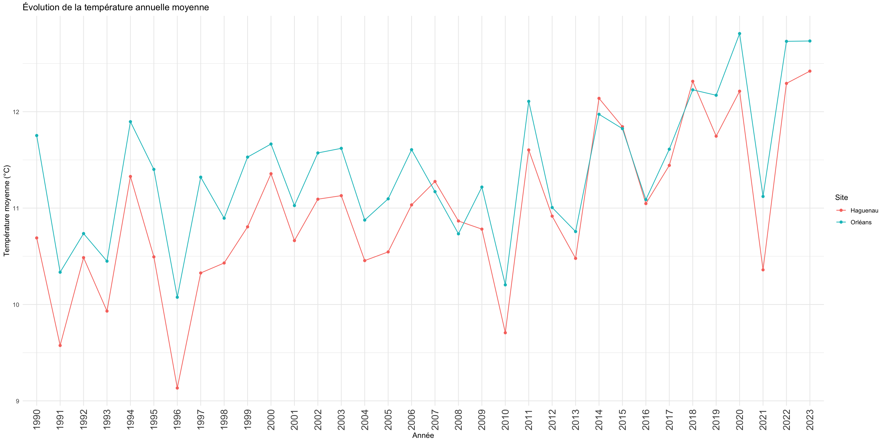
# Plot Anomalie annuelle des Tmoy pour la période de végétation (avril à septembre)
# 1. Filtrer la période avril à septembre
data_veg <- data_clim %>%
filter(month %in% 4:9)
# 2. Calcul de la température moyenne journalière sur la période
tmoy_veg <- data_veg %>%
group_by(site, year) %>%
summarise(tmoy_veg = mean(as.numeric(t_q), na.rm = TRUE), .groups = "drop")
# 3. Moyenne climatologique
moyenne_tmoy_veg <- tmoy_veg %>%
group_by(site) %>%
summarise(tmoy_veg_moy = mean(tmoy_veg, na.rm = TRUE))
# 4. Anomalies
tmoy_anomalie_veg <- tmoy_veg %>%
left_join(moyenne_tmoy_veg, by = "site") %>%
mutate(anomalie = tmoy_veg - tmoy_veg_moy)
# 5. Graphique
# Les 2 sites sur le même plot
# ggplot(tmoy_anomalie_veg, aes(x = as.factor(year), y = anomalie, fill = site)) +
# geom_col(position = "dodge") +
# labs(
# title = "Anomalie de la température moyenne (avril–septembre)",
# x = "Année", y = "Écart à la moyenne (°C)", fill = "Site") +
# theme_minimal() +
# theme(axis.text.x = element_text(size = 14, angle = 90, vjust = 0.5, hjust = 1)) +
# geom_hline(yintercept = 0, linetype = "dashed")
# Les 2 sites sur plot différents
ggplot(tmoy_anomalie_veg, aes(x = as.factor(year), y = anomalie, fill = site)) +
geom_col(position = "dodge", show.legend = FALSE) + # on peut cacher la légende car chaque facette représente un site
facet_wrap(~site) +
labs(
title = "Anomalie de la température moyenne (avril–septembre)",
x = "Année", y = "Écart à la moyenne (°C)") +
theme_minimal() +
theme(
axis.text.x = element_text(size = 12, angle = 90, vjust = 0.5, hjust = 1),
strip.text = element_text(size = 14),
plot.title = element_text(size = 16, face = "bold"),
panel.spacing = unit(1, "lines")) +
geom_hline(yintercept = 0, linetype = "dashed")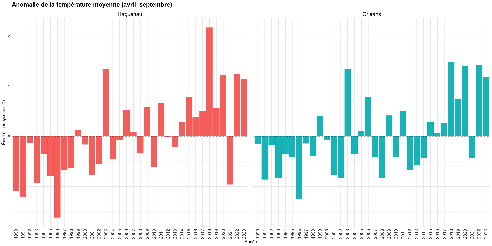
# Je calcul Tmin pour chaque années à partir des données journalières
data_clim <- data_clim %>%
group_by(site, year) %>%
mutate(tmin = min(t_q, na.rm = TRUE))
# Plot - Evolution de la Tmin annuelle
data_clim %>%
group_by(site, year) %>%
summarise(temp_min = min(t_q, na.rm = TRUE)) %>%
ggplot(aes(x = as.factor(year), y = temp_min, color = site)) +
geom_line(aes(group = site)) +
geom_point() +
labs(
title = "Évolution de la température minimale annuelle",
x = "Année", y = "Température minimale (°C)", color = "Site") +
theme_minimal() +
theme(axis.text.x = element_text(size=14, angle = 90, vjust = 0.5, hjust = 1))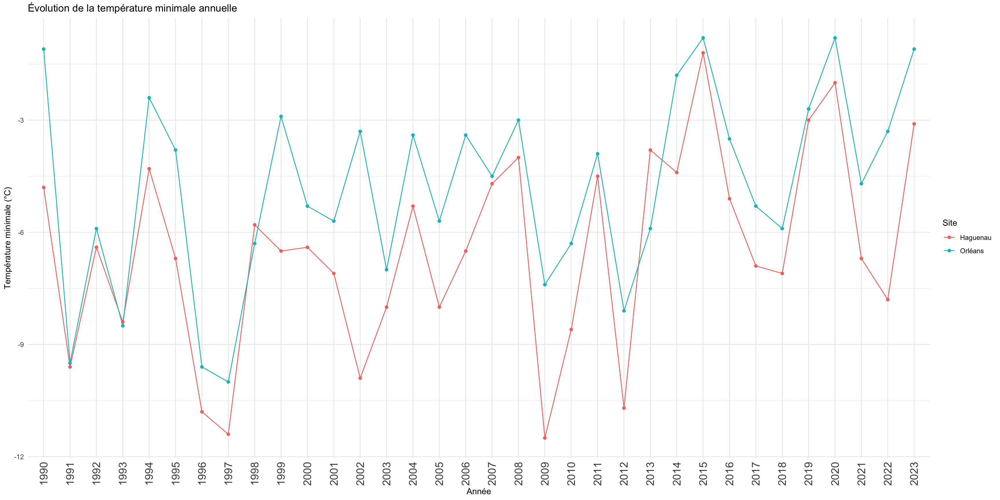
# Plot - Anomalie annuelle des Tmin
tmin_annuelle <- data_clim %>% # Je calcule Tmin annuelle (le plus froid de l'année par site)
group_by(site, year) %>%
summarise(tmin_annuelle = min(as.numeric(t_q), na.rm = TRUE), .groups = "drop")
moyennes_tmin <- tmin_annuelle %>% # Moyenne climatologique de Tmin annuelle par site
group_by(site) %>%
summarise(tmin_moy = mean(tmin_annuelle, na.rm = TRUE))
tmin_anomalie <- tmin_annuelle %>% # Calcul de l’anomalie annuelle
left_join(moyennes_tmin, by = "site") %>%
mutate(anomalie = tmin_annuelle - tmin_moy)
# 2 sites sur même figure
# ggplot(tmin_anomalie, aes(x = as.factor(year), y = anomalie, fill = site)) +
# geom_col(position = "dodge") +
# labs(
# title = "Anomalie annuelle de la température minimale (Tmin) par rapport à la moyenne de la période 1990 - 2023",
# x = "Année", y = "Écart à la moyenne (°C)", fill = "Site") +
# theme_minimal() +
# theme(axis.text.x = element_text(size = 14, angle = 90, vjust = 0.5, hjust = 1)) +
# geom_hline(yintercept = 0, linetype = "dashed")
# 2 sites sur des plots séparés
ggplot(tmin_anomalie, aes(x = as.factor(year), y = anomalie, fill = site)) +
geom_col(show.legend = FALSE) + # plus besoin de légende avec facettes
facet_wrap(~site) +
labs(
title = "Anomalie annuelle de la température minimale (Tmin) par rapport à la moyenne de la période 1990 - 2023",
x = "Année", y = "Écart à la moyenne (°C)") +
theme_minimal() +
theme(
axis.text.x = element_text(size = 12, angle = 90, vjust = 0.5, hjust = 1),
strip.text = element_text(size = 14),
plot.title = element_text(size = 16, face = "bold", hjust = 0.5),
panel.spacing = unit(1, "lines")) +
geom_hline(yintercept = 0, linetype = "dashed")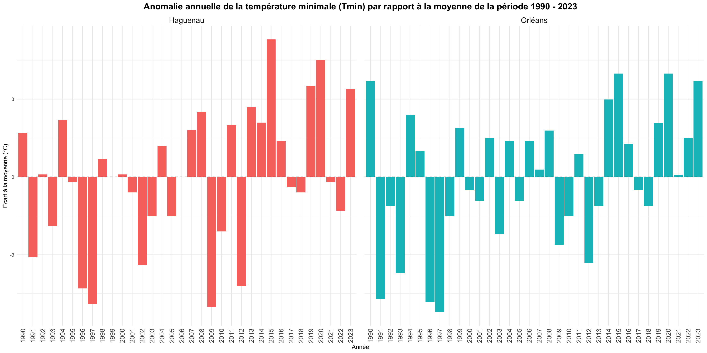
# Plot Anomalie des Tmin pour la période de végétation (avril à septembre)
# 1. Je filtre la période avril à septembre
data_veg <- data_clim %>%
filter(month %in% 4:9)
# 2. Je calcul la Tmin saisonnière (le jour le plus froid entre avril et septembre)
tmin_veg <- data_veg %>%
group_by(site, year) %>%
summarise(tmin_veg = min(as.numeric(t_q), na.rm = TRUE), .groups = "drop")
# 3. Moyenne climatologique (sur toutes les années) par site
moyennes_tmin_veg <- tmin_veg %>%
group_by(site) %>%
summarise(tmin_veg_moy = mean(tmin_veg, na.rm = TRUE))
# 4. Calcul de l’anomalie
tmin_anomalie_veg <- tmin_veg %>%
left_join(moyennes_tmin_veg, by = "site") %>%
mutate(anomalie = tmin_veg - tmin_veg_moy)
# 5. Graphique
# 2 sites sur le meme plot
# ggplot(tmin_anomalie_veg, aes(x = as.factor(year), y = anomalie, fill = site)) +
# geom_col(position = "dodge") +
# labs(
# title = "Anomalie de la température minimale (Tmin) pour la période de végétation (avril à septembre)",
# x = "Année", y = "Écart à la moyenne (°C)", fill = "Site") +
# theme_minimal() +
# theme(axis.text.x = element_text(size = 14, angle = 90, vjust = 0.5, hjust = 1)) +
# geom_hline(yintercept = 0, linetype = "dashed")
# Z sites sur des plots séparés
ggplot(tmin_anomalie_veg, aes(x = as.factor(year), y = anomalie, fill = site)) +
geom_col(show.legend = FALSE) + # Légende inutile avec facettes
facet_wrap(~site) +
labs(
title = "Anomalie de la température minimale (Tmin) pendant la période de végétation (avril à septembre)",
x = "Année", y = "Écart à la moyenne (°C)") +
theme_minimal() +
theme(
axis.text.x = element_text(size = 12, angle = 90, vjust = 0.5, hjust = 1),
strip.text = element_text(size = 14),
plot.title = element_text(size = 16, face = "bold", hjust = 0.5),
panel.spacing = unit(1, "lines")) +
geom_hline(yintercept = 0, linetype = "dashed")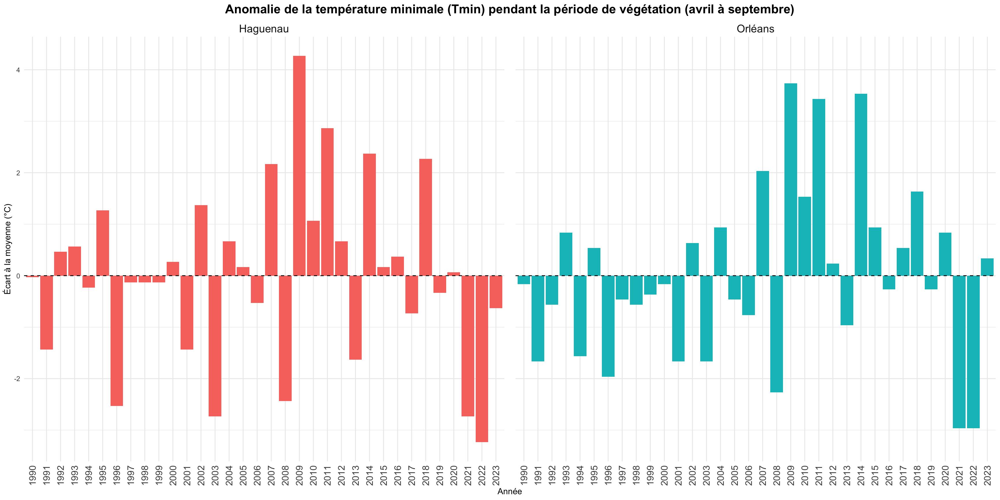
# Je calcul Tmax pour chaque année à partir des données journalières
data_clim <- data_clim %>%
group_by(site, year) %>%
mutate(tmax = max(t_q, na.rm = TRUE))
# Plot - Evolution de la Tmax annuelle
data_clim %>%
group_by(site, year) %>%
summarise(temp_moy = mean(tmax, na.rm = TRUE)) %>%
ggplot(aes(x = as.factor(year), y = temp_moy, color = site)) +
geom_line(aes(group = site)) +
geom_point() +
labs(
title = "Évolution de la température maximale annuelle",
x = "Année", y = "Température maximale (°C)", color = "Site") +
theme_minimal() +
theme(axis.text.x = element_text(size=14,angle = 90, vjust = 0.5, hjust = 1))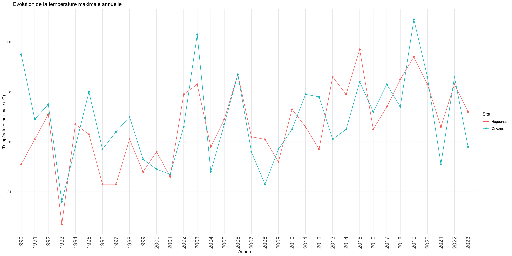
# Plot - Anomalie annuelle des Tmax
tmax_annuelle <- data_clim %>% # Je calcul les Tmax annuelle
group_by(site, year) %>%
summarise(tmax_annuelle = max(as.numeric(t_q), na.rm = TRUE), .groups = "drop")
moyennes_tmax <- tmax_annuelle %>% # Moyenne de Tmax annuelle par site
group_by(site) %>%
summarise(tmax_moy = mean(tmax_annuelle, na.rm = TRUE))
tmax_anomalie <- tmax_annuelle %>% # Je calcul l’anomalie annuelle
left_join(moyennes_tmax, by = "site") %>%
mutate(anomalie = tmax_annuelle - tmax_moy)
# 2 sites sur le même graph
# ggplot(tmax_anomalie, aes(x = as.factor(year), y = anomalie, fill = site)) +
# geom_col(position = "dodge") +
# labs(
# title = "Anomalie annuelle de la température maximale (Tmax) par rapport à la moyenne de la période 1990 - 2023",
# x = "Année", y = "Écart à la moyenne (°C)", fill = "Site") +
# theme_minimal() +
# theme(axis.text.x = element_text(size = 14, angle = 90, vjust = 0.5, hjust = 1)) +
# geom_hline(yintercept = 0, linetype = "dashed")
# 2 sites sur des plots séparés
ggplot(tmax_anomalie, aes(x = as.factor(year), y = anomalie, fill = site)) +
geom_col(show.legend = FALSE) +
facet_wrap(~site) +
labs(
title = "Anomalie annuelle de la température maximale (Tmax) par rapport à la moyenne de la période 1990 - 2023",
x = "Année", y = "Écart à la moyenne (°C)") +
theme_minimal() +
theme(
axis.text.x = element_text(size = 12, angle = 90, vjust = 0.5, hjust = 1),
strip.text = element_text(size = 14),
plot.title = element_text(size = 16, face = "bold", hjust = 0.5),
panel.spacing = unit(1, "lines")) +
geom_hline(yintercept = 0, linetype = "dashed")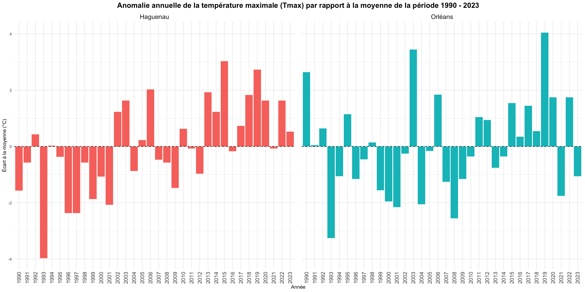
# Plot Anomalie des Tmax pour la période de végétation (avril à septembre)
# 1. Je filtre la période avril à septembre
data_veg <- data_clim %>%
filter(month %in% 4:9)
# 2. Je calcule la Tmax saisonnière (le jour le plus chaud entre avril et septembre)
tmax_veg <- data_veg %>%
group_by(site, year) %>%
summarise(tmax_veg = max(as.numeric(t_q), na.rm = TRUE), .groups = "drop")
# 3. Moyenne climatologique (sur toutes les années) par site
moyennes_tmax_veg <- tmax_veg %>%
group_by(site) %>%
summarise(tmax_veg_moy = mean(tmax_veg, na.rm = TRUE))
# 4. Calcul de l’anomalie
tmax_anomalie_veg <- tmax_veg %>%
left_join(moyennes_tmax_veg, by = "site") %>%
mutate(anomalie = tmax_veg - tmax_veg_moy)
# 5. Graphique
# 2 sites sur même graph
# ggplot(tmax_anomalie_veg, aes(x = as.factor(year), y = anomalie, fill = site)) +
# geom_col(position = "dodge") +
# labs(
# title = "Anomalie de la température maximale (Tmax) pour la période de végétation (avril à septembre)",
# x = "Année", y = "Écart à la moyenne (°C)", fill = "Site") +
# theme_minimal() +
# theme(axis.text.x = element_text(size = 14, angle = 90, vjust = 0.5, hjust = 1)) +
# geom_hline(yintercept = 0, linetype = "dashed")
# 2 sites sur des plots séparés
ggplot(tmax_anomalie_veg, aes(x = as.factor(year), y = anomalie, fill = site)) +
geom_col(show.legend = FALSE) +
facet_wrap(~site) +
labs(
title = "Anomalie de la température maximale (Tmax) période de végétation (avril à septembre)",
x = "Année", y = "Écart à la moyenne (°C)") +
theme_minimal() +
theme(
axis.text.x = element_text(size = 12, angle = 90, vjust = 0.5, hjust = 1),
strip.text = element_text(size = 14),
plot.title = element_text(size = 16, face = "bold", hjust = 0.5),
panel.spacing = unit(1, "lines")) +
geom_hline(yintercept = 0, linetype = "dashed", color = "grey40")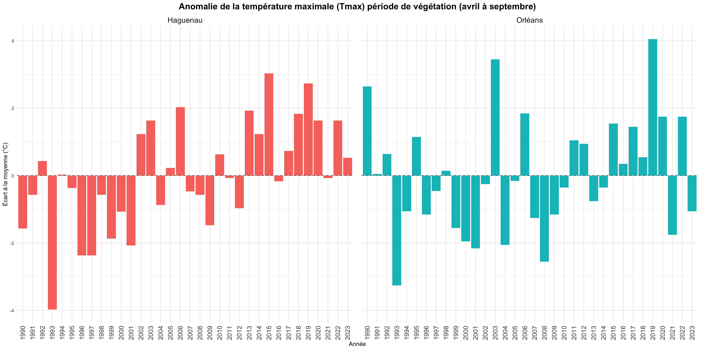
# Je calcul les précipitations totales (pluie + neige)
data_clim <- data_clim %>%
mutate(pluie_totale = as.numeric(preliq_q) + as.numeric(prenei_q))
# Plot - Evolution de la pluviométrie annuelle
data_clim %>%
group_by(site, year) %>%
summarise(pluie_annuelle = sum(pluie_totale, na.rm = TRUE)) %>%
ggplot(aes(x = as.factor(year), y = pluie_annuelle, color = site)) +
geom_line(aes(group = site)) +
geom_point() +
labs(
title = "Évolution de la pluviométrie annuelle",
x = "Année", y = "Précipitations totale (mm)", color = "Site"
) +
theme_minimal() +
theme(axis.text.x = element_text(size = 14, angle = 90, vjust = 0.5, hjust = 1))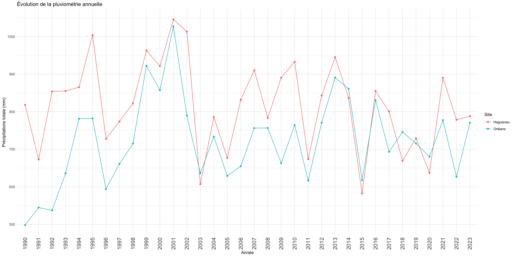
# Plot - Anomalie annuelle des précipitations
pluie_annuelle <- data_clim %>% # Calcul de la pluie annuelle par site
group_by(site, year) %>%
summarise(pluie_annuelle = sum(pluie_totale, na.rm = TRUE), .groups = "drop")
moyennes_sites <- pluie_annuelle %>% # Calcul de la moyenne sur toute la période pour chaque site
group_by(site) %>%
summarise(pluie_moy = mean(pluie_annuelle, na.rm = TRUE))
pluie_anomalie <- pluie_annuelle %>% # Je Fusionne et calcul l'anomalie
left_join(moyennes_sites, by = "site") %>%
mutate(anomalie = pluie_annuelle - pluie_moy)
# 2 sites sur le même plot
# ggplot(pluie_anomalie, aes(x = as.factor(year), y = anomalie, fill = site)) +
# geom_col(position = "dodge") +
# labs(
# title = "Anomalie annuelle de précipitations par rapport à la moyenne de la période 1990 - 2023",
# x = "Année", y = "Écart à la moyenne (mm)", fill = "Site") +
# theme_minimal() +
# theme(axis.text.x = element_text(size = 14, angle = 90, vjust = 0.5, hjust = 1)) +
# geom_hline(yintercept = 0, linetype = "dashed")
# 2 sites sur des plots différents
ggplot(pluie_anomalie, aes(x = as.factor(year), y = anomalie, fill = site)) +
geom_col(show.legend = FALSE) +
facet_wrap(~site) +
labs(
title = "Anomalie annuelle de précipitations par rapport à la moyenne de la période 1990 - 2023",
x = "Année", y = "Écart à la moyenne (mm)") +
theme_minimal() +
theme(
axis.text.x = element_text(size = 12, angle = 90, vjust = 0.5, hjust = 1),
strip.text = element_text(size = 14),
plot.title = element_text(size = 16, face = "bold", hjust = 0.5),
panel.spacing = unit(1, "lines")) +
geom_hline(yintercept = 0, linetype = "dashed")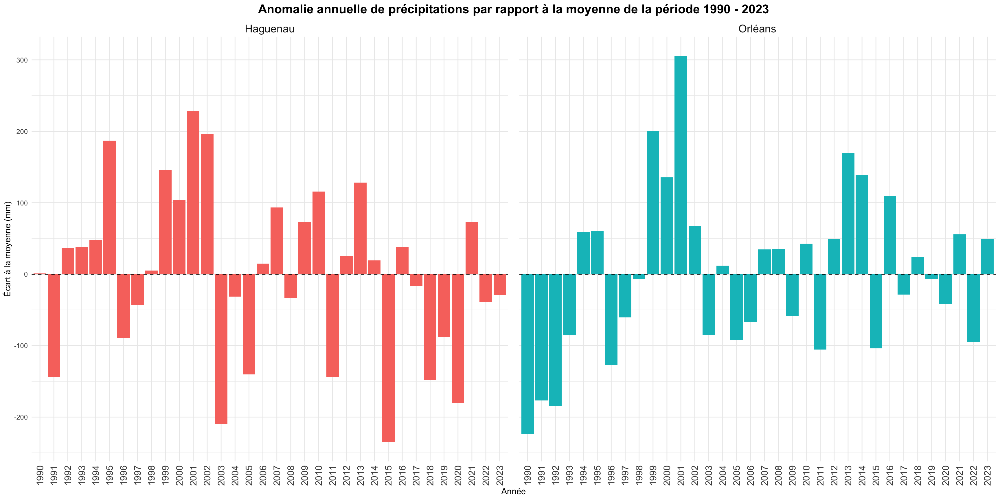
# Plot Anomalie annuelle des précipitation pour la période de végétation (avril à septembre)
# 1. Je Filtre la période avril à septembre
data_veg <- data_clim %>%
filter(month %in% 4:9) %>%
mutate(pluie_totale = as.numeric(preliq_q) + as.numeric(prenei_q))
# 2. Calcul de la somme annuelle des précipitations sur la période de végétation
pluie_veg <- data_veg %>%
group_by(site, year) %>%
summarise(pluie_veg = sum(pluie_totale, na.rm = TRUE), .groups = "drop")
# 3. Moyenne climatologique (avril–septembre) par site
moyenne_pluie_veg <- pluie_veg %>%
group_by(site) %>%
summarise(pluie_veg_moy = mean(pluie_veg, na.rm = TRUE))
# 4. Calcul des anomalies
pluie_anomalie_veg <- pluie_veg %>%
left_join(moyenne_pluie_veg, by = "site") %>%
mutate(anomalie = pluie_veg - pluie_veg_moy)
# 5. Graphique
# 2 sites sur le même plot
# ggplot(pluie_anomalie_veg, aes(x = as.factor(year), y = anomalie, fill = site)) +
# geom_col(position = "dodge") +
# labs(
# title = "Anomalie de précipitations pour la période de végétation (avril–septembre)",
# x = "Année", y = "Écart à la moyenne (mm)", fill = "Site") +
# theme_minimal() +
# theme(axis.text.x = element_text(size = 14, angle = 90, vjust = 0.5, hjust = 1)) +
# geom_hline(yintercept = 0, linetype = "dashed")
# 2 sites sur des plots différents
ggplot(pluie_anomalie_veg, aes(x = as.factor(year), y = anomalie, fill = site)) +
geom_col(show.legend = FALSE) +
facet_wrap(~site) +
labs(
title = "Anomalie de précipitations pour la période de végétation (avril–septembre)",
x = "Année", y = "Écart à la moyenne (mm)") +
theme_minimal() +
theme(
axis.text.x = element_text(size = 12, angle = 90, vjust = 0.5, hjust = 1),
strip.text = element_text(size = 14),
plot.title = element_text(size = 16, face = "bold", hjust = 0.5),
panel.spacing = unit(1, "lines")) +
geom_hline(yintercept = 0, linetype = "dashed")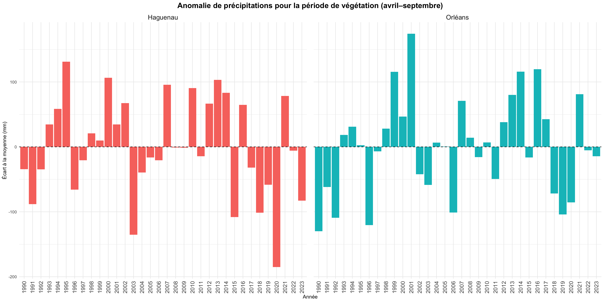
data_clim <- data_clim %>%
mutate(deficit_hydrique = pluie_totale - etp_q)
# calcul du bilan hydrique mensuel (précipitations - ETP)
data_mensuelle <- data_clim %>%
mutate(an_mois = format(date, "%Y-%m")) %>%
group_by(cell, site, an_mois) %>% # <--- ajout de site
summarise(
bilan_hydrique = sum(deficit_hydrique, na.rm = TRUE),
.groups = "drop"
) %>%
mutate(date = as.Date(paste0(an_mois, "-15")))
# appliquer le SPEI par cellule (site)
spei_resultats <- data_mensuelle %>%
arrange(site, cell, date) %>%
group_by(site, cell) %>%
group_modify(~ {
spei_1 <- spei(.x$bilan_hydrique, scale = 1)
spei_3 <- spei(.x$bilan_hydrique, scale = 3)
spei_12 <- spei(.x$bilan_hydrique, scale = 12)
.x$spei_1 <- as.numeric(spei_1$fitted)
.x$spei_3 <- as.numeric(spei_3$fitted)
.x$spei_12 <- as.numeric(spei_12$fitted)
return(.x)
})
# calcul de la moyenne annuelle du SPEI 1 mois
spei1_annuel <- spei_resultats %>%
mutate(annee = lubridate::year(date)) %>%
group_by(site, annee) %>%
summarise(spei1_annuel = mean(spei_1, na.rm = TRUE), .groups = "drop")
# Visualisation
library(grid) # nécessaire pour unit()
ggplot(spei1_annuel, aes(x = annee, y = spei1_annuel, color = site)) +
geom_line() +
geom_point() +
geom_hline(yintercept = 0, linetype = "dashed", color = "grey40", linewidth = 0.4) +
facet_wrap(~site) +
labs(
title = "SPEI 1 mois - Moyenne annuelle par site",
x = "Année", y = "SPEI 1 mois moyen"
) +
scale_x_continuous(
breaks = 1990:2023,
expand = expansion(mult = c(0, 0))
) +
ylim(-0.8, 0.8) +
theme_minimal() +
theme(
axis.text.x = element_text(size = 12, angle = 90, hjust = 0.5, vjust = 0.5),
strip.text = element_text(size = 14),
plot.title = element_text(size = 16, face = "bold"),
panel.grid.major = element_line(color = "grey75", size = 0.2),
panel.grid.minor = element_blank(),
panel.spacing = unit(1.2, "lines") # << plus d’espace entre les facettes
)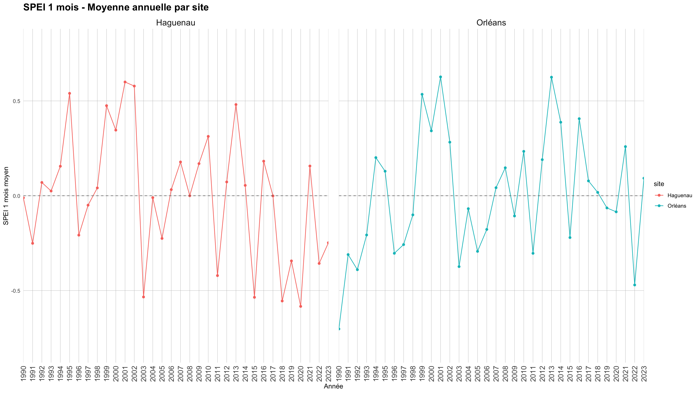